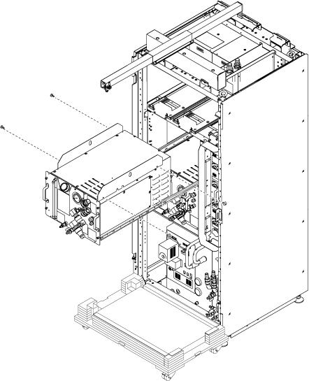

- 00000018WIA3011B230GYZ
- id_156675431.20
- Nov 21, 2024 7:05:03 PM
Replacing the Cabinet Cooling Unit (CCU)
Prerequisites
| Required persons | Preliminary requirements | Procedure | Finalization |
|---|---|---|---|
| 1 | Not Applicable | 90 minutes | 15 minutes |
| Item | Quantity | Effectivity | Part number | Manufacturer |
|---|---|---|---|---|
| Standard Tool | 1 | - | - | - |
| 20L Draining Tank | 3 | - | - | - |
| Water Hand Pump | 1 | - | - | - |
| 150MM FUNNEL | 1 | - | - | - |
| Ladder | 1 | - | - | - |
| Small Plastic Bags (for stopping draining water) | 2 | - | - | - |
| Tie Wraps | 2 | - | - | - |
| Hoist Service Kit | 1 | - |
5196226 | - |
| Flexible Water Tank (In System) | 1 | - |
5342981 | - |
| Item | Quantity | Effectivity | Part number | Manufacturer |
|---|---|---|---|---|
| Towels | NA | - | - | - |
| Item | Quantity | Effectivity | Part number | Manufacturer |
|---|---|---|---|---|
| CCU | 1 | - |
Refer to FRU Manual | - |
| ||||||||
| Condition | Reference | Effectivity |
|---|---|---|
|
ICC facility water valve will be turned off. Check the hospital facility chiller valve integrity to avoid the excessive loads on the facility water pumps and lines. | - | - |
|
ISC Power must be turned OFF. Refer to Lockout / Tagout for ISC. | - | - |
Procedure
- Open ICC Cover and remove it.
Figure 3. Remove Cover 
- Attach the lifting brackets to both sides of the CCU. The lifting brackets can be found in the CCU FRU crate.
Figure 16. Lifting Brackets 
Warning 
Move the new FRU in front of ICC.CAUTION 
Finalization
- Perform check scan.
- Disassemble the hoist kit and restore it to the stored location.
- Package the FRU Box crate including the defective part and return.